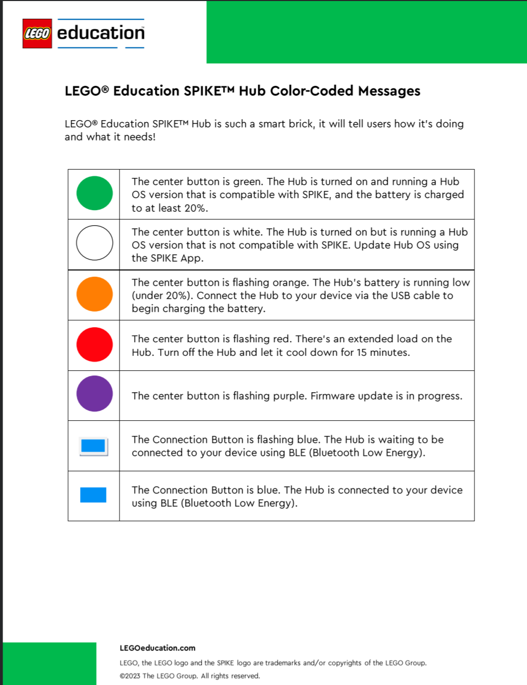

Identify the button, color and pattern. Display letters are separate program outputs.
| Button | Color and pattern | Meaning and action |
| Center | Green, steady | Hub is on, its OS is compatible with SPIKE, and battery is at least 20%. Still check the correct hub connection, program and clear lane before running. |
| Center | White, steady | Hub OS needs an update to work with SPIKE. Ask the mentor to follow the app's update instructions. |
| Center | Orange, flashing | Battery is below 20%. Tell the mentor and connect the USB cable to charge. |
| Center | Red, flashing | Extended load. Stop, tell the mentor, switch the hub off and let it cool for 15 minutes. |
| Center | Purple, flashing | Firmware update is in progress. Let the update finish and follow the app instructions. |
| Connection | Blue, flashing | Waiting for a Bluetooth connection. Check the intended hub name with the mentor. |
| Connection | Blue, steady | Connected by Bluetooth. This is not a battery-level indication. |
Printable PDF · Official LEGO FAQs
